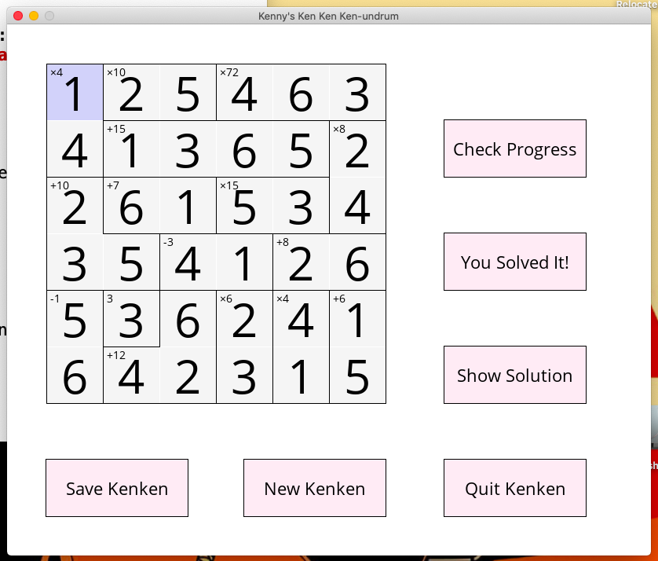
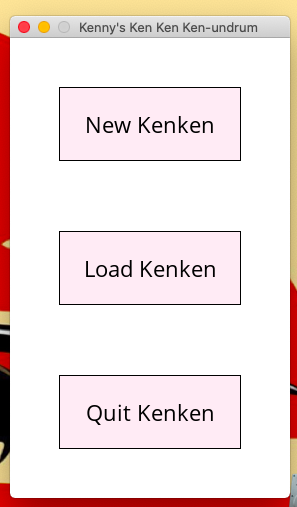
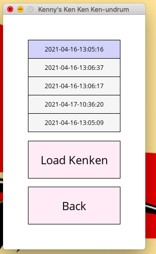
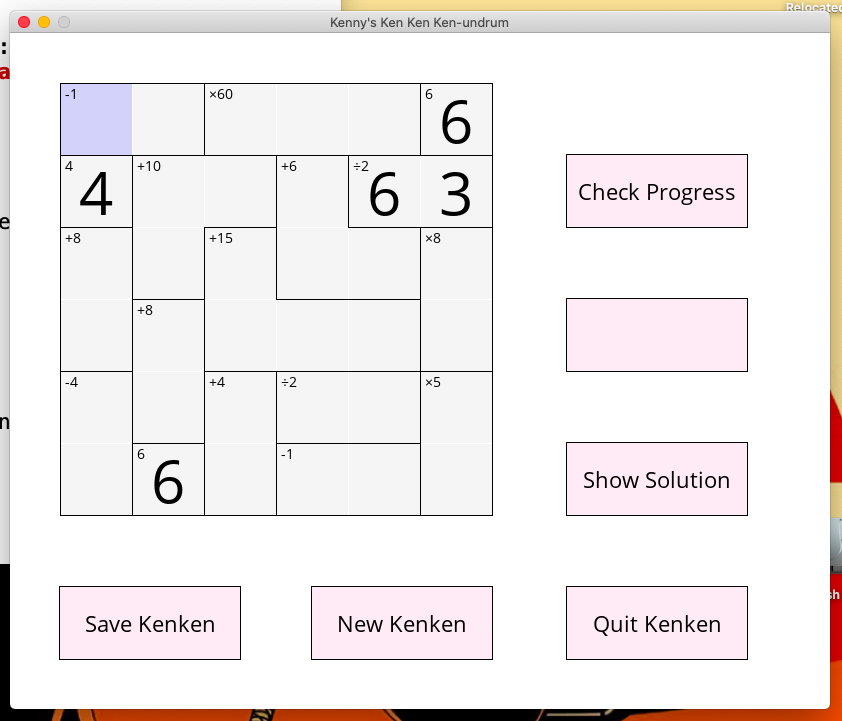
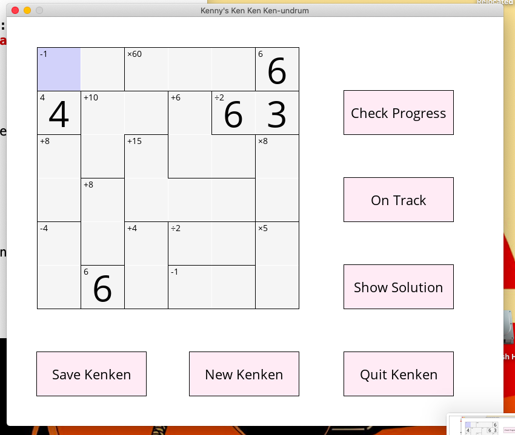
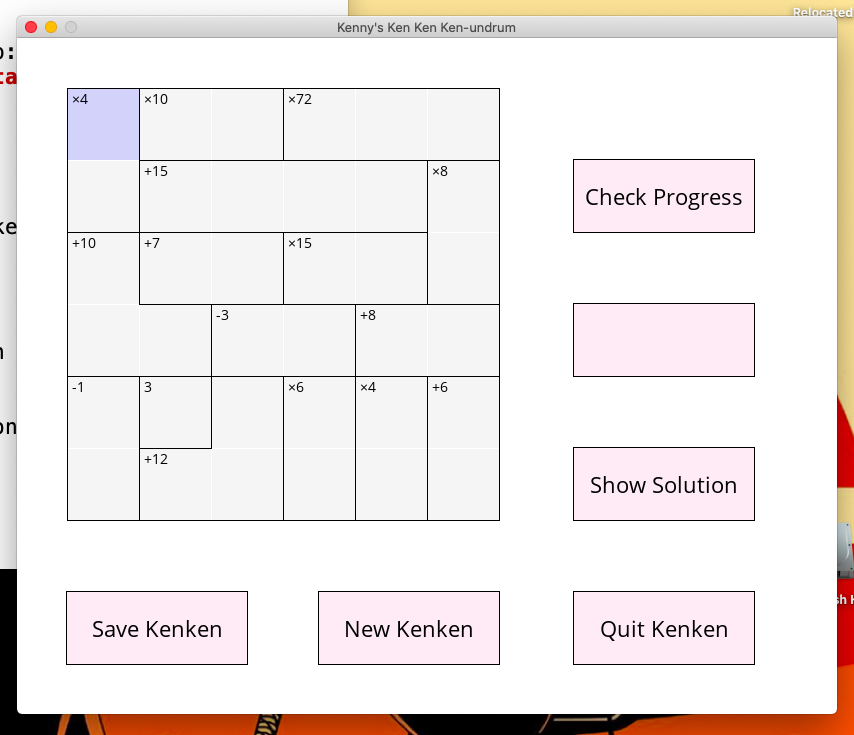

This website documents the programming projects I have created, and the programming skills that I have been developing. At university, I learned Haskell and Java, but I took a long hiatus before returning to programming in 2019. I majored in Mathematics for my undergrad, and I have a Master of Teaching. When I returned to programming, I started learning C as a hobby, and now I have gained experience with multiple programming languages, alongside knowledge of networks, data structures and algorithms.
This project started as an excuse to implement linked lists, but grew from there into a full fledged Kenken generator, solver and game. Throughout this project, I had to develop my C skills extensively, in particular building my knowledge of memory allocation, C data types and recursive algorithms. This project also required me to develop skills in organising and planning software as I went.
I then created a program "GUI-Kenken" which required me to learn SDL2, a common graphics library with windowing and rendering capabilities.
I have now completed this project, having added loading and saving features and a start menu. One day I may do a more major rewrite to allow for variably sized kenkens to be created and stored, but that is not something that I plan to implement in the near future.
     To view on Github, visit https://github.com/w-flowers/Kenken
A simple website to showcase the development of my software development knowledge. This currently contains simple HTML, CSS and Javascript.
Source code for the website can be found here: https://github.com/w-flowers/w-flowers.github.io
I have been working through the algorithms in this textbook, and implementing them in C. I have finished Sorting Algorithms, and am starting to work through the sections on searching algorithms.
The git repository linked contains some of my solutions to the exercises of this book. https://github.com/w-flowers/algos_in_c
A simple command line Python program that converts a date from one format to another. An exercise to practice using the basic control flow constructs and standard library tools available in Python.
The git repository linked contains the source code of this program in the directory "dateconverter". https://github.com/w-flowers/py-code
A library for entering a username, score and time taken into a sqlite3 database file. Currently contains functions for writing scores to the database, and returning a list of scores, either ordered by time entered or by score. I am planning to extend the scoredb library to allow fetching by username, and fetching by date range.
The git repository linked contains the source code of this program in the directory "scoredb". https://github.com/w-flowers/py-code